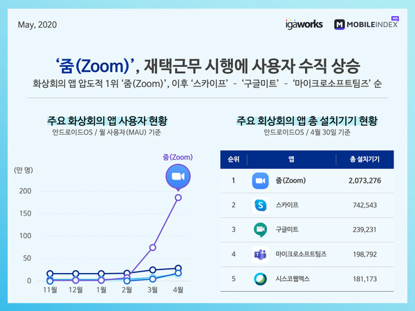

<!DOCTYPE html>
<html lang="ko">
<head>
  <meta charset="UTF-8">
  <title>blog1</title>
  <link rel="stylesheet" href="css/blog-3400.css">
</head>
</html>
<body>
  <div id="base">
    <div class="header">
      <h1>세상은 이제 "언택트(untact)" 시대?</h1>
      <p style="color: rgb(153, 153, 153)">2021.12.06</p>
    </div>
    <hr>

    <div class="content">
      <p> 코로나19로 인해 우리에게 찾아온 큰 변화. 그것은 바로 온라인 미팅이다. 코로나19의 유행으로 인해 
        학생들이 학교에 등교하지 못하고, 직장인들이 회사에 출근하지 못하게 되는 문제가 생겼다.
      </p>
      <p> 이때, 문제를 해결하기 위한 방안으로 주목을 받은 것이 바로 화상회의 프로그램이다. 
        코로나19가 유행하기 전에 화상회의 프로그램들은 그다지 많이 사용되지 않았다. 
      하지만 코로나19의 유행으로 비대면 수업과 비대면 업무를 위해 점차 사용되기 시작했다.</p>

      
      <span style="font-size: 13px; padding-top:5px; color: rgb(129, 128, 128)">협업 툴 시장의 성장세</span>
      <p>코로나19의 유행으로 재택근무의 비율이 늘어나자 사람들은 프로젝트를 비대면으로 진행하기 위해 협업 툴 앱을 
        사용하기 시작했다. 위에 그래프에서 볼 수 있듯이 앱 사용자 수가 급증하였다. 또한, 
      화상회의 기능이 없는 앱보다 화상회의 기능이 있는 앱의 사용자 수가 월등히 많다.</p>

      
      <span style="font-size: 13px; padding-top:5px; color: rgb(129, 128, 128)">대표적인 화상회의 프로그램</span>

        <p>화상회의 프로그램의 사용률은 앱 사용률과는 비교가 안 될 정도로 엄청나게 증가했다. 
          대표적으로 줌(zoom), 구글 미트(google meet), MS 팀즈(Teams)가 있다. 밑에 그래프를 보고 알 수 있듯이 가장 많이 사용되는 
        프로그램은 줌(zoom)이고 스카이프와 구글 미트가 뒤따르고 있다. 화상회의 앱을 설치한 안드로이드 기기만 340만이 넘으니
      컴퓨터나 노트북 등을 생각한다면 사용자 수가 엄청나다는 것을 알 수 있다. </p>
      

      <p> 이렇게 화상회의의 사용이 활발해지면서 사람들은 점점 비대면에 익숙해져 갔다. 선생님이나 교수님께서 온라인으로 수업을 
        진행해도 전혀 어색하지 않고 자연스럽게 온라인으로 시험도 보게 됐다. 이전에는 외국 지사와 회의를 진행하기 위해서 무조건 
        해외 출장을 가야 했지만 지금은 아무렇지 않게 줌 링크를 공유하여 온라인 상에서 회의를 진행한다. 단순히 학교의 수업과 회사에서의 
      미팅 뿐만이 아니라 G20 정상회담 조차도 화상회의를 이용해 진행하는 것에 이르렀다. </p>
      <p>이러한 변화는 단순히 한 때의 유행에 그치지 않고 새로운 시대를 열었다. 바로 언택트 시대이다. 언택트 콘택트(contact:접촉하다)에 
          부정의 이미인 언(un-)을 붙인 합성어로 사람과 직접 접촉하지 않는 것을 말한다. 언택트 시대로 들어서면서 사람들은 
        일을 진행하거나 해결하기 위한 새로운 방식을 익혔고, 이것은 엄청난 편리함을 가져다 주었다. </p>
      <p>사람과의 만남이 가상의 세계 속에서 이루어지는 것이란 사람들에게는 아직 어색하고 낯설 수 있다. 하지만 인간은 적응의 동물이기에
        새로운 변화 속에서 어떻게 행동해야 할 지를 생각하고 변화하고 있다. 언택트 시대를 맞이한 인류가 어떤 방식으로 새로운 발전을 
        이루어낼지가 정말 기대된다. </p>
        <br>
        <a href="https://www.youtube.com/watch?v=K1KsxNZSPtk" target="_blank"></a>

    </div>

    
    <div id="lightbox">
      
    </div>

    <div class="footer">

    </div>

  </div>


  <script src="lightbox.js"></script>
</body>